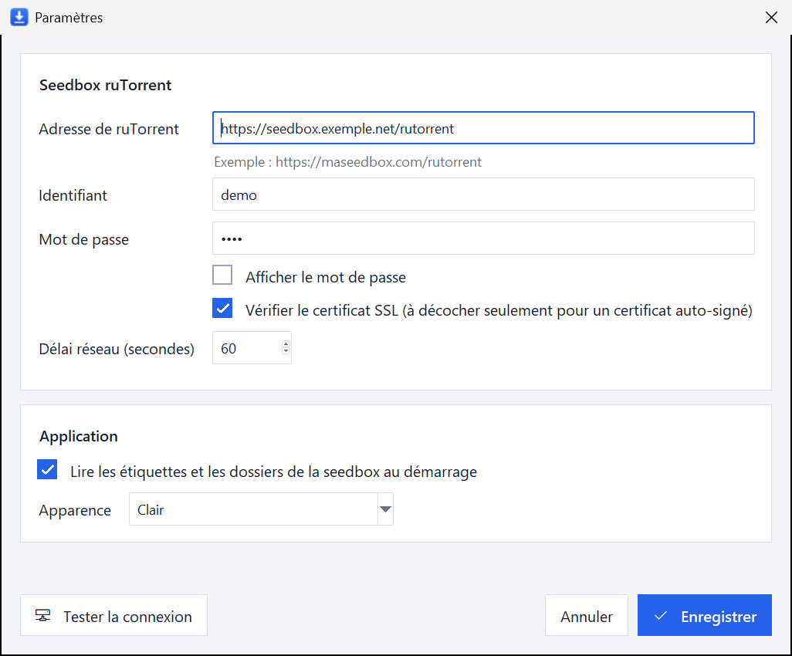
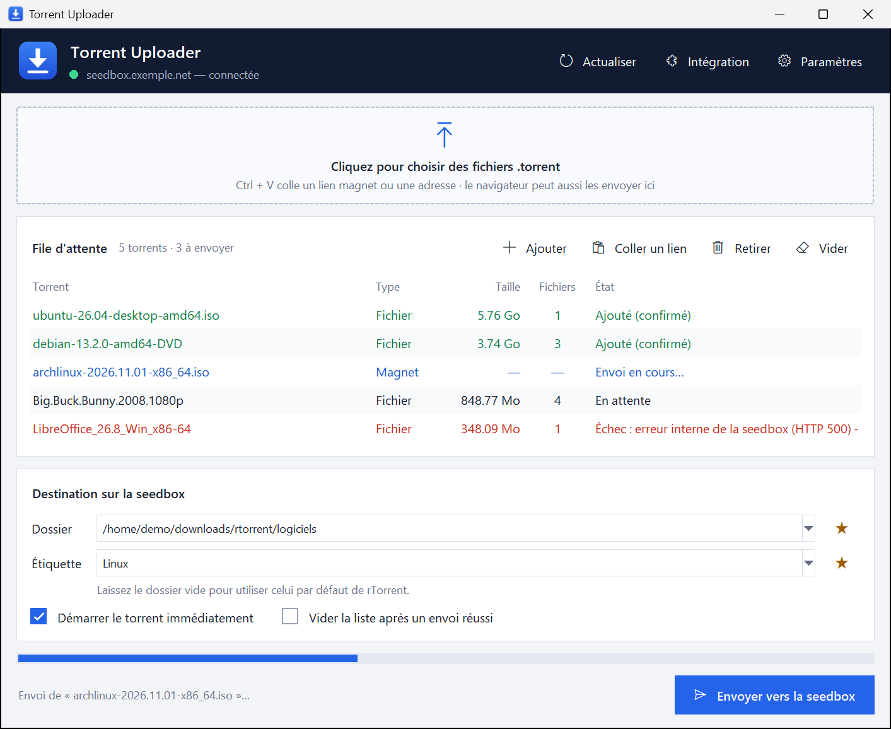
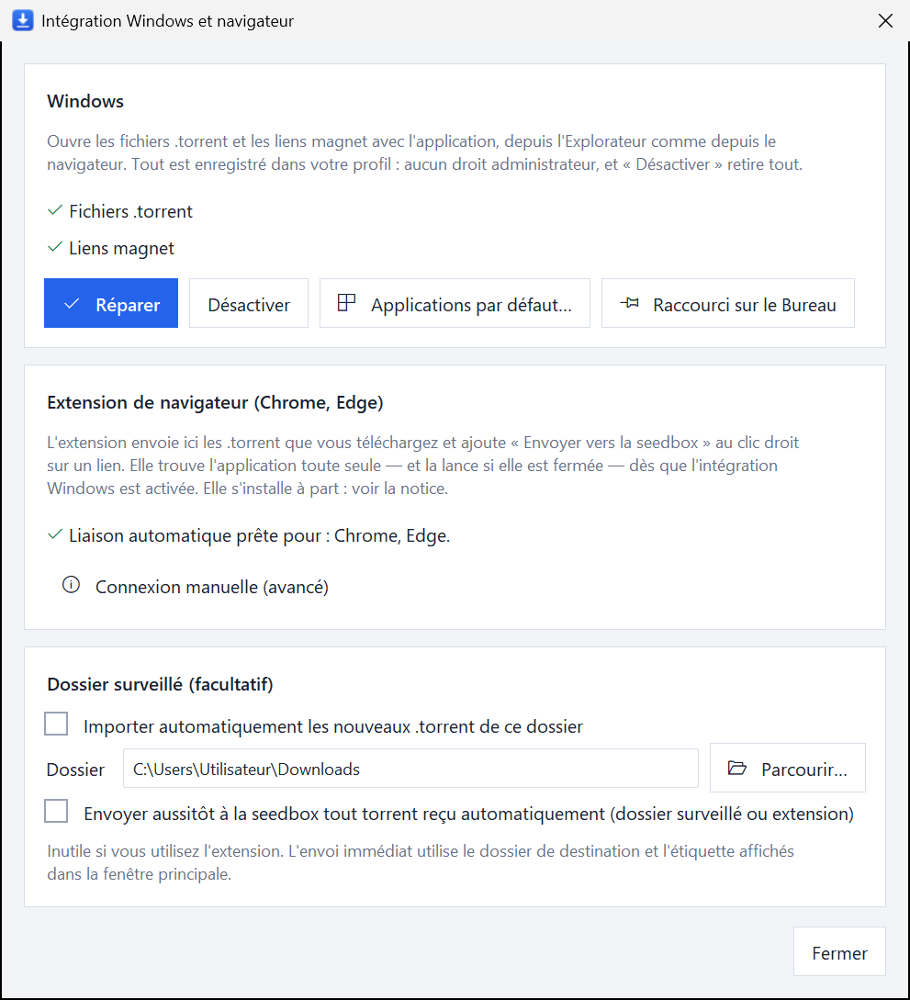
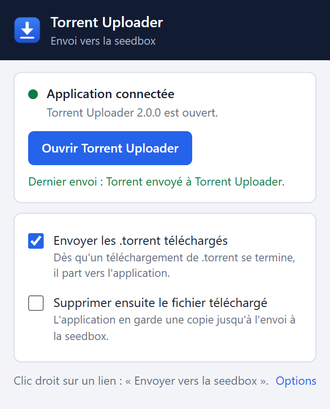
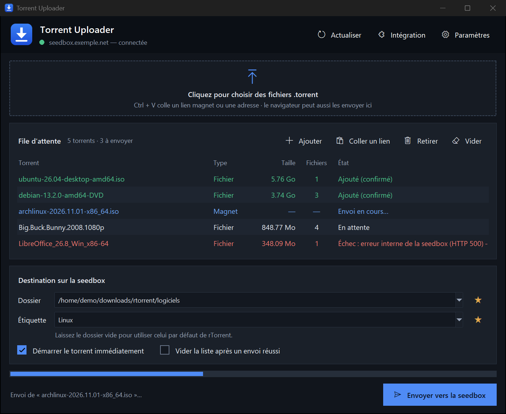

Notice de fonctionnement et d'utilisation
Torrent Uploader envoie vos fichiers .torrent et vos liens
magnet vers une seedbox ruTorrent / rTorrent, en choisissant à
chaque fois le dossier de destination et l'étiquette. Les torrents peuvent arriver de trois façons :
.torrent, clic sur un lien magnet,
glisser-déposer sur l'application ou sur son raccourci ;.torrent téléchargé part automatiquement vers l'application, et un clic droit sur un
lien propose « Envoyer vers la seedbox » ;pythonw.exe et l'association des fichiers .pyw).python ouvre le Microsoft Store, Python n'est pas réellement installé :
installez-le depuis python.org. L'application refuse d'ailleurs de s'enregistrer auprès de Windows
avec ce faux Python.Documents. Il n'y a rien d'autre à installer.pip install tkinterdnd2. Sans ce module, tout le reste
fonctionne (bouton « Ajouter », raccourci, collage, navigateur).Double-cliquez sur « Torrent Uploader.pyw » (ou sur « Torrent Uploader.bat »). Au tout premier lancement, la fenêtre des paramètres s'ouvre d'elle-même :

https://maseedbox.com/rutorrent. Vous pouvez la coller telle quelle, même terminée par
/php/addtorrent.php..torrent et les liens magnet
d'un simple clic, et à l'extension du navigateur de fonctionner.
| Comment | Ce qui se passe |
|---|---|
| Cliquer sur la zone en pointillés, ou « Ajouter » | Choix de fichiers .torrent (plusieurs à la fois possible). |
| Glisser-déposer des fichiers ou un dossier | Sur la fenêtre (avec tkinterdnd2), sur le raccourci du Bureau ou sur Torrent Uploader.bat. Un dossier apporte tous les .torrent qu'il contient. |
| Ctrl + V ou « Coller un lien » | Ajoute les liens magnet, les adresses de .torrent et les chemins de fichiers présents dans le presse-papiers. |
Double-clic sur un .torrent, clic sur un lien magnet | Une fois l'intégration Windows activée. |
| Depuis le navigateur | Avec l'extension : téléchargement d'un .torrent, ou clic droit sur un lien. |
Un même torrent n'entre qu'une fois dans la liste, même s'il arrive une fois comme fichier et une fois comme lien magnet : l'application compare leurs empreintes. Si l'application est déjà ouverte, tout nouvel arrivage rejoint la fenêtre existante, qui passe au premier plan.
Cliquez sur « Envoyer vers la seedbox » (ou Ctrl + Entrée). Chaque ligne indique son état ; un double-clic sur une ligne affiche le détail complet.
| État | Signification |
|---|---|
| Ajouté (confirmé) | L'application a vérifié que le torrent figure bien sur la seedbox. |
| Ajouté (confirmé malgré une erreur passagère) | La seedbox a répondu par une erreur, mais le torrent est bien arrivé. |
| Ajouté (après réparation du cache ruTorrent) | ruTorrent était bloqué ; l'application l'a remis d'aplomb puis a renvoyé le torrent (voir §11). |
| Envoyé (non confirmé) | Accepté par la seedbox, sans vérification possible (adresse http sans empreinte connue, ou seedbox lente). |
| Échec : … | Le motif est indiqué. « Réessayez dans un instant » signale un incident passager. |
Options sous la destination : « Démarrer le torrent immédiatement » (sinon il est ajouté à l'arrêt) et « Vider la liste après un envoi réussi ».
| Ctrl + V | Coller des liens | Suppr | Retirer les lignes sélectionnées |
| F5 | Actualiser étiquettes et dossiers | Ctrl + Entrée | Envoyer |
Bouton Intégration dans le bandeau, puis Activer.

Une fois activée :
.torrent l'ajoute à la file ;magnet: dans le navigateur ouvre l'application (le navigateur
demande une confirmation la première fois : cochez « Toujours autoriser ») ;Raccourci sur le Bureau crée une icône « Torrent Uploader » sur laquelle vous
pouvez déposer des .torrent.
Si vous déplacez le dossier de l'application ou réinstallez Python, relancez simplement l'application une fois : l'intégration se met à jour toute seule (ou cliquez sur Mettre à jour).
L'extension fait parvenir à l'application les torrents rencontrés dans le navigateur :
.torrent se
termine, l'application l'ajoute à sa file, où que vous l'ayez enregistré ;.torrent →
« Envoyer vers la seedbox (Torrent Uploader) ». Sur un tracker privé, le fichier est lu avec votre
session ouverte sur le site.Elle ne demande aucun réglage : elle trouve l'application d'elle-même, et la lance si elle est fermée.
chrome://extensions.manifest.json).Edge : même démarche à l'adresse edge://extensions — « Mode
développeur » se trouve en bas à gauche, puis « Charger l'extension décompressée ».

chrome://extensions,
déplacez le dossier, puis chargez-la de nouveau. Elle n'est pas publiée sur le Chrome Web Store,
d'où le passage par le mode développeur ; Chrome peut vous rappeler de temps en temps que des
extensions de ce type sont actives.Dans sa fenêtre, ou dans ses options (clic droit sur l'icône → « Options ») :
| Réglage | Effet |
|---|---|
| Envoyer les .torrent téléchargés | Capture automatique (activée par défaut). Désactivée, seul le clic droit envoie. |
| Supprimer ensuite le fichier téléchargé | Le .torrent quitte votre dossier de téléchargement et l'historique ; l'application en garde une copie jusqu'à l'envoi. |
| Afficher une notification | Sans notification, le résultat reste visible sur l'icône (✓ vert ou ! rouge). |
| Connexion manuelle | Secours, si la liaison automatique est impossible : jeton et port à recopier depuis l'application (Intégration → Connexion manuelle). L'application doit alors être ouverte. |
Dans Intégration, l'application peut surveiller un dossier (par défaut
Téléchargements) et importer chaque nouveau .torrent qui y apparaît. C'est utile avec un
autre navigateur que Chrome ou Edge ; avec l'extension, c'est inutile.
.crdownload) n'est pris qu'une fois complet..torrent est écartée.| Réglage | Usage |
|---|---|
| Vérifier le certificat SSL | À décocher uniquement pour une seedbox à certificat auto-signé. |
| Délai réseau | Temps d'attente maximal d'une réponse de la seedbox (60 s par défaut). |
| Lire les étiquettes et les dossiers au démarrage | Sinon, utilisez « Actualiser ». |
| Apparence | Automatique (suit le thème de Windows), clair ou sombre. |

Vos réglages sont rangés dans votre profil Windows, et non à côté du programme : le dossier de l'application peut ainsi être copié, partagé ou remplacé sans jamais emporter un mot de passe.
Emplacement : %APPDATA%\TorrentUploader (collez cette adresse dans la barre de
l'Explorateur).
| Fichier | Contenu |
|---|---|
config.json | Réglages, adresse et identifiants de la seedbox, favoris, dernières listes lues. |
ipc_token.txt | Clé du service local (créée automatiquement). |
erreurs.log | Journal des incidents, utile en cas de problème. |
recus\ | Copies de .torrent reçus du navigateur, supprimées après envoi (ou au bout d'une semaine). |
native-host\ | Relais utilisé par l'extension du navigateur. |
config.json, protégé par les droits de votre session
Windows. Ne partagez pas ce fichier.L'application écoute sur la boucle locale (127.0.0.1, port 38471) pour ne garder qu'une
seule fenêtre ouverte et recevoir les envois. Ce service est inaccessible depuis le réseau, refuse
toute requête sans sa clé, et une page web ne peut ni le piloter ni lire ses réponses. Le relais de
l'extension, lui, n'est utilisable que par l'extension déclarée.
config.json est déplacé dans
votre profil (§8). Sinon, copiez-le vous-même dans %APPDATA%\TorrentUploader.chrome://extensions, puis chargez la nouvelle (§5). Elle n'a plus besoin du jeton.Activer l'integration Windows.bat,
Desactiver l'integration Windows.bat et windows_integration.py n'existent
plus : tout passe par le bouton Intégration.chrome://extensions : Supprimer l'extension.%APPDATA%\TorrentUploader.| Symptôme | Cause probable et solution |
|---|---|
| « Authentification refusée (HTTP 401) » | Identifiant ou mot de passe incorrect. |
| « Page introuvable (HTTP 404) » | L'adresse ne pointe pas sur ruTorrent : vérifiez-la dans un navigateur. |
| « Erreur SSL » | Certificat auto-signé : décochez « Vérifier le certificat SSL ». |
| « Erreur interne de la seedbox (HTTP 500) » | rTorrent est momentanément occupé ou redémarre. L'application réessaie seule (après 15 s, 30 s, 1 min, 2 min, 5 min) et garde les listes déjà connues. |
| Les envois échouent en série alors que ruTorrent marche dans le navigateur | Défaut connu de ruTorrent (versions antérieures à 5.3.13) : son cache interne se corrompt si une page se charge pendant un redémarrage de rTorrent. L'application le répare toute seule et renvoie le torrent. Vous pouvez aussi recharger ruTorrent dans le navigateur. |
| Dossiers ou étiquettes absents des listes | Cliquez sur « Actualiser » (F5). Les listes ne montrent que ce qui est utilisé par au moins un torrent ; saisissez librement une autre valeur, et mettez-la en favori ★. |
| L'icône de l'extension indique « Liaison non activée » | Activez l'intégration dans l'application (§4), puis rouvrez la fenêtre de l'extension. |
Un .torrent téléchargé n'arrive pas dans l'application | Vérifiez dans la fenêtre de l'extension que « Envoyer les .torrent téléchargés » est coché. Le nom du fichier doit se terminer par .torrent. |
Rien ne se passe au double-clic sur un .torrent | Intégration → Mettre à jour. Si un autre client torrent est prioritaire, utilisez « Ouvrir avec » ou « Applications par défaut… ». |
| « Le service local n'a pas pu démarrer (port 38471 occupé) » | Un autre programme utilise ce port. Le port se change dans config.json (clé ipc_port) ; l'extension s'adapte d'elle-même. |
| L'application ne s'ouvre pas | Lancez Torrent Uploader.bat : il signale un Python absent ou inutilisable. Une erreur au démarrage s'affiche dans une fenêtre, et son détail est écrit dans %APPDATA%\TorrentUploader\erreurs.log. |
php/addtorrent.php de ruTorrent (fichier en
multipart/form-data, lien magnet ou adresse en champ url), avec le
dossier (dir_edit) et l'étiquette (label).httprpc (quatre champs par torrent), insensible au cache de ruTorrent ; repli sur
mode=list si nécessaire.info, ou
celle du lien magnet) est recherchée sur la seedbox.python torrent_uploader.py fichier.torrent "magnet:?…" | Ouvre l'application avec ces éléments dans la file |
python torrent_uploader.py --register / --unregister | Active / retire l'intégration |
python torrent_uploader.py --status | Affiche l'état de l'intégration |
python torrent_uploader.py --version | Affiche la version |
Torrent Uploader 2.0.0 — notice générée avec l'application.